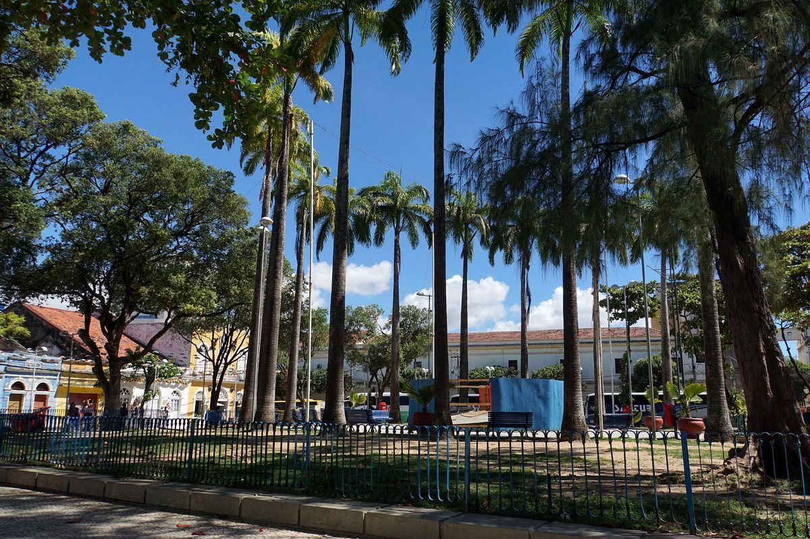
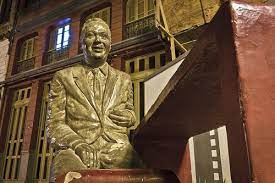
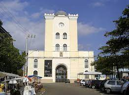
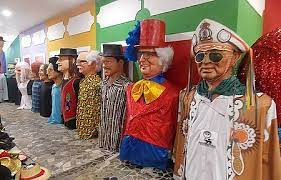

Dois otimos pontos turisticos

1. Rua de bom jesus
Apesar de pequena, a Rua do Bom Jesus oferece vários atrativos aos seus visitantes, sendo a principal delas o seu colorido conjunto arquitetônico e os antigos trilhos do bonde que cortava a região. Apesar de sua importância histórica e do título de uma das mais belas do mundo, há vários casarões com aspecto de abandono.
PRAÇA DO ARSENAL

Projetada pelo famoso para paisagista Roberto Burle Marx, a Praça do Arsenal da Marinha é cercada por inúmeras palmeiras imperiais e em seu centro se ergue uma grande fonte.
MONUMENTO A ANTÔNIO MARIA

A estátua em homenagem a Antônio Maria (1921–1964), compositor e poeta pernambucano, autor da famosa canção “Frevo número 1 de Recife”, escrita em 1951 faz parte do Circuito da Poesia, formado por 17 esculturas de artistas pernambucanos ou que viveram no estado.
TORRE MALAKOFF

No finalzinho da rua está a Torre Malakoff, o monumental prédio que fazia parte do portão de entrada do Arsenal da Marinha, idealizado em 1853. Na época da sua construção, havia muita notícia veiculada pelo Diário de Pernambuco a respeito da Guerra da Criméia, com destaque para o foco de resistência em defesa da colina e da torre fortificada de Malakoff, o que gerou grande interesse no Recife. E foi a própria população que escolheu o nome da torre, em homenagem a esses acontecimentos.
EMBAIXADA DOS BONECOS GIGANTES

O famoso e agitado Carnaval de Pernambuco não seria o mesmo sem a presença dos grandiosos bonecos de Olinda. Originados na Europa durante a Idade Média, a tradição destes bonecos chegaram a Pernambuco pela pequena cidade de Belém do São Francisco, no sertão do estado, com a chegada de um padre belga que levou ao conhecimento de seus discípulos esta tradição, sendo desta cidade a origem a criação do primeiro boneco gigante do Brasil em 1919, Zé Pereira, e em seguida, Vitalina. A tradição dos bonecos gigantes iniciada em Belém do São Francisco chegou em Olinda em 1931, com a criação do boneco Homem da Meia Noite.
Centro de Artesanato.

Parada obrigatória no Recife, o Centro de Artesanato de Pernambuco - Roberto Lessa chama atenção dos turistas e recifenses por diversos motivos, como diversidade artesanal, organização, corredores amplos, vista privilegiada para o mar e preços que cabem no bolso de todos. Há mais de nove anos anos funcionando em frente à Praça do Marco Zero, a loja conta com mais de 25 mil peças à venda, todas elas produzidas por cerca 1,8 mil artesãos de todas as regiões do Estado.
Com uma área de mais de 2,5 mil m², o espaço traz ambientes decorados para que o visitante possa visualizar a utilização de peças artesanais em espaços como sala de estar, sala de jantar, quarto, entre outros, através de um olhar contemporâneo. A loja tem artesanato das mais diversas matérias-primas, como cerâmica, madeira, vidro, metal, renda, têxtil e outros.